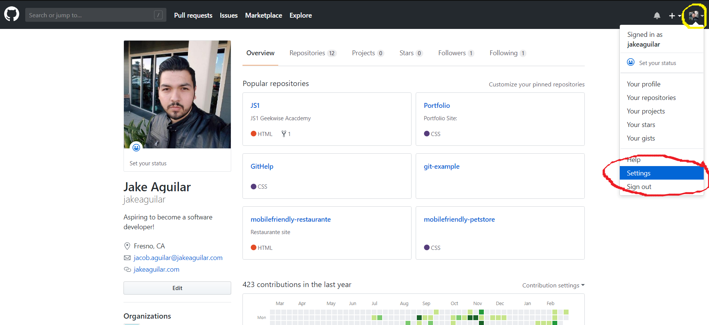
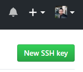
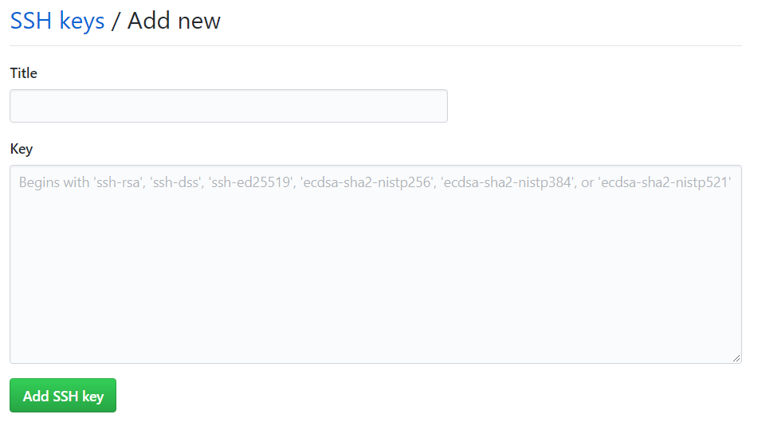

Setting Up Git/Github SSH Key (Windows)
1.) Open up your terminal, or Git Bash for Windows Users
2.) Paste the text below, substituting in your GitHub email address.
ssh-keygen -t rsa -b 4096 -C "your_email@example.com"
This creates a new ssh key, using the provided email as a label.
> Generating public/private rsa key pair
3.) When you're prompted to "Enter a file in which to save the key," press Enter. This accepts the default file location.
Enter a file in which to save the key (/c/Users/you/.ssh/id_rsa):[Press enter]
4.) At the prompt, type a secure passphrase.
> Enter passphrase (empty for no passphrase): [Type a passphrase]
> Enter same passphrase again: [Type passphrase again]
5.) Start your ssh-agent manually, by copying the command below:
eval $(ssh-agent -s)
After, it will spit out an agent pid number, your's will be different than the one below:
> Agent pid 12345
6.) Add your SSH private key to the ssh-agent, by copying the command below:
ssh-add ~/.ssh/id_rsa
7.) Copy the SSH key to your clipboard by copying the command below:
clip < ~/.ssh/id_rsa.pub
8.) Now, login in to your Github account, and go to your account settings
9.) In the user settings sidebar, click "SSH and GPG keys"

10.) Click the green button labeled "New SSH Key"
11.) In the "Title" field, add a descriptive label for the new key, an example would be if you're developing on your personal laptop or Mac, you could call this key, "My Acer Laptop" or "My Mac".
12.) Paste your clipped key into the "Key" field.
13.) Click "Add SSH key"
14.) If you're prompted, enter your Github password
Setting Up Git/Github SSH Key (Mac)
1.) Open up your terminal, or Git Bash for Windows Users
2.) Paste the text below, substituting in your GitHub email address.
ssh-keygen -t rsa -b 4096 -C "your_email@example.com"
This creates a new ssh key, using the provided email as a label.
> Generating public/private rsa key pair
3.) When you're prompted to "Enter a file in which to save the key," press Enter. This accepts the default file location.
Enter a file in which to save the key (/c/Users/you/.ssh/id_rsa):[Press enter]
4.) At the prompt, type a secure passphrase.
> Enter passphrase (empty for no passphrase): [Type a passphrase]
> Enter same passphrase again: [Type passphrase again]
5.) Start your ssh-agent manually, by copying the command below:
eval $(ssh-agent -s)
6.) If you're using macOS Sierra 10.12.2 or later, you will need to modify your ~/.ssh/config file to automatically load keys into the ssh-agent and store passphrases in your keychain.
Host *
AddKeysToAgent yes
UseKeychain yes
IdentityFile ~/.ssh/id_rsa
7.) Add your SSH private key to the ssh-agent, by copying the command below:
ssh-add -K ~/.ssh/id_rsa
8.) Copy the SSH key to your clipboard by copying the command below:
pbcopy < ~/.ssh/id_rsa.pub
9.) Now, login in to your Github account, and go to your account settings
10.) In the user settings sidebar, click "SSH and GPG keys"
11.) Click the green button labeled "New SSH Key"
12.) In the "Title" field, add a descriptive label for the new key, an example would be if you're developing on your personal laptop or Mac, you could call this key, "My Acer Laptop" or "My Mac".
13.) Paste your clipped key into the "Key" field.
14.) Click "Add SSH key"
15.) If you're prompted, enter your Github password
Setting Up Git/Github SSH Key (Linux)
1.) Open up your terminal, or Git Bash for Windows Users
2.) Paste the text below, substituting in your GitHub email address.
ssh-keygen -t rsa -b 4096 -C "your_email@example.com"
This creates a new ssh key, using the provided email as a label.
> Generating public/private rsa key pair
3.) When you're prompted to "Enter a file in which to save the key," press Enter. This accepts the default file location.
Enter a file in which to save the key (/home/you/.ssh/id_rsa): [Press enter]
4.) At the prompt, type a secure passphrase.
> Enter passphrase (empty for no passphrase): [Type a passphrase]
> Enter same passphrase again: [Type passphrase again]
5.) Start your ssh-agent manually, by copying the command below:
eval "$(ssh-agent -s)"
After, it will spit out an agent pid number, your's will be different than the one below:
> Agent pid 12345
6.) Add your SSH private key to the ssh-agent, by copying the command below:
ssh-add ~/.ssh/id_rsa
7.) Copy the SSH key to your clipboard by copying the command below:
If your SSH key file has a different name than the example code, modify the filename to match your current setup. When copying your key, don't add any newlines or whitespace.
sudo apt-get install xclip
xclip -sel clip < ~/.ssh/id_rsa.pub
8.) Now, login in to your Github account, and go to your account settings
9.) In the user settings sidebar, click "SSH and GPG keys"
10.) Click the green button labeled "New SSH Key"
11.) In the "Title" field, add a descriptive label for the new key, an example would be if you're developing on your personal laptop or Mac, you could call this key, "My Acer Laptop" or "My Mac".
12.) Paste your clipped key into the "Key" field.
13.) Click "Add SSH key"
14.) If you're prompted, enter your Github password